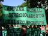

پذيرش > تریبون > مقالات > سقط جنين قانوني، امن و آزاد حق زنان آرژانتینی


 سقط جنين قانوني، امن و آزاد حق زنان آرژانتینی سقط جنين قانوني، امن و آزاد حق زنان آرژانتینی
9 مهر 1390 - ترجمه: سیمین رادمنش - نسخه قابل چاپ
تغییر برای برابری: از سال 2005 جنبش زنان و فمينيستي در آرژانتين تلاشی خستگي ناپذير براي گسترش كمپين ملي حق سقط جنين قانوني، بي خطر و آزاد داشته اند. AWID گفتگويي با "كلوديا آنزورنا"، جامعه شناس و فعال، در مورد كمپين، اهداف و دستاوردهاي آن داشته است.
28 سپتامبر روز لغو مجازات هاي كيفري براي سقط جنين در آمريكاي لاتين و كارائيب (LAC) - كمپيني كه چندين سال است در سطح منطقه اي تشكيل شده - است. هر كشوري در منطقه بسته به پيشرفت يا پس رفت در مورد حقوق جنسي و باروري در كشور اقدامات مختلفي در اين روز انجام مي دهد. هدف، با تمام تفاوت هاي ظريف آن، اين است كه سقط جنين قانوني امن و قانوني در سراسر آمریکای لاتین و کارائیب به عنوان يكي ازبخش هاي حق توليد مثل شناخته شود." جزئي اساسي،ذاتي و لاينفك از آن دسته ازحقوق بشر كه بايد در چهارچوب تائيد دولت هاي سكولار اعمال به ترويج عدالت اجتماعي و برابري جنسيتي كند."
AWID: ممكن است در مورد وضعيت فعلي حقوق جنسي و باروري در آرژانتين توضيح دهيد؟
كلوديا آنزورنا (CA): آرژانتين دو قانون دارد كه نتيجه ي فعاليت چندين ساله، تلاش و تصويب قوانين مختلف در استان هاي مختلف است. قانون 25.673 برنامه ي بهداشت ملي جنسي و باروري در سال 2003، و قانون 26.150 برنامه ي ملي براي آموزش جنسي جامع در سال 2006 ايجاد شد.
با اين وجود، اين برنامه ها با توجه به فشارواپسگرايانه ي گروه هاي محافظه كار، با مشكلات زيادي در زمينه ي اجراي آن ها روبرو شدند. به طور مثال، پزشكاني كه با استناد به دلائل اخلاقي از اطلاع رساني در مورد پيشگيري از بارداري به زنان و يا تجويزآن امتناع مي كنند، و يا معلمان و والدينی که مخالف آموزش هاي جنسي به كودكان در مدارس هستند. همچنين، با توجه به اين كه اين مسئله يكي از اولويت هاي دولت نيست، فقدان اراده ي سياسي و منابع مورد نياز براي گسترش اجراي آن وجود دارد. در آرژانتين كليساي كاتوليك به طور فعالانه به مخالفت با گسترش حقوق زنان و افراد غير مطابق با فعاليت هاي جنسي پذيرفته شده، به ويژه آنهايي كه مرتبط به تمايلات جنسي هستند، مي پردازد.
AWID: آيا اين قوانين شامل دسترسي به امكان سقط جنين مي شوند؟
CA: نه، شامل آنها نمي شود. سقط جنين از سال 1921 جرم محسوب شده است (ماده ي 86 از قانون مجازات) با سه مورد استثنا: زماني كه زندگي يا سلامت زن باردار در معرض خطر است، زماني كه بارداري ناشي از تجاوز و يا سوء استفاده از زناي باشد كه دچار عقب افتادگي رواني است.
اما حتا در مواردي كه اين عمل قانوني محسوب مي شود زنان همچنان داراي مشكلاتي براي دسترسي به سقط جنين هستند. اغلب اوقات آنها به دادگاه هاي غيرضروري برده مي شوند و يا با تفاسير محدود كننده اي در مورد علل ظهور اتفاق- به وسيله ي يك متن پرابهام- مانع دسترسي به سقط جنين قانوني براي دختران و زنان دچار معلوليت هاي ذهني مي شوند.
زناني كه براي يك مورد سقط جنين به يك بيمارستان مي آيند- با ميل شخصي يا ناخواسته- با گزارش به پليس مورد تهديد و آزار قرار مي گيرند. همين مسئله باعث اين مي شود كه زنان براي مراجعت به بيمارستان و دريافت كمك تا زماني كه وضعيت آن ها به شرايط وخيمي نرسيده است صبر كنند. در اين موارد، زنان جوان و فقير منابع مورد نياز براي دسترسي به سقط جنين در شرايط امن و مخفيانه ندارند.
پس از عمومي شدن چندين مورد ( از جمله LMR و آناماريا آكودو) و اجبار دولت به اتخاذ موضع، وزارت فدرال بهداشت يك راهنماي بشردوستانه در مورد مراقبت ها و راهنمايي های بعد از سقط جنين و همچنين راهنماي مراقبت در موارد سقط جنين غير قابل تعقیب و مجازات و قانوني مهيا و ارائه كرد، اما آن ها به ندرت اجرا مي شوند.
سالانه 500,000 مورد سقط جنين ناامن در آرژانتين تخمين زده مي شود. آرژانتين در اين زمينه داري يكي از بالاترين ميزان مرگ و مير در آمريكاي لاتين- دو برابر اروگوئه و شيلي- است. و علت اصلي اين مرگ و ميرها عوارض سقط جنين در شرايط ناامن است. از زمان بازگشت آرژانتين به دمكراسي در سال 1983، بيش از 3000 زن بر اثر سقط جنين مخفيانه درگذشته اند.نهادهاي بين المللي حقوق بشر آرژانتين را در مورد اين وضعيت به چالش كشيده و توصيه به اصلاح قوانين خود در اين مورد كرده اند.
AWID: بافت اجتماعي و سياسي در زماني كه كمپين ملي حق قانوني سقط جنين قانوني، بي خطر و آزاد شروع به كار كرد چگونه بود؟ اهداف كمپين چه ها هستند؟
CA: در دسامبر 2001، بحران در آرژانتين باعث تجديد بسيج اجتماعي و مردمي شد. در اين شرايط، سازمان ها و گروه هاي فمنيستي قديمي و جديد با شور و حرارت بيشتري يكي از خواسته هاي كليدي خود - قانوني كردن سقط جنين و حقوق جنسي و باروري- را پيگيري كردند.
خاستگاه و منشا كمپين ملي حق قانوني سقط جنين قانوني، بي خطر و آزاد (Encuentros Nacionales de Mujeres (ENM) (تجمعات ملي زنان) است. يك تجمع ساليانه در نقاط مختلف كشور كه در حدود 25000 زن با پيشينه هاي مختلف را گرد هم مي آورد.
كمپين در طول فعاليت های ENM در روزاريو (2003) و مندوزا(2004) شكل گرفت و در حال حاضر يك اتحاد گسترده ي ائتلافي است كه به بيان و بهبود تاريخ مبارزات كشور ما براي حق قانوني كردن سقط جنين در شرايط امن و آزاد مي پردازد. كمپين در "كوردوبا" در تاريخ 28 مي 2005 راه اندازي شد و از آن زمان به بعد ظرفيت و قدرت هماهنگي اقدامات به طور همزمان در سراسر كشور تحت موضوع " آموزش جنسي براي تصميم گيري، پيش گيري از بارداري براي جلوگيري از سقط جنين، سقط جنين قانوني براي پيش گيري از مرگ" را داشته است.
كمپين در عمل به عنوان يك نوع "چتر" عمل ميكند، سكويي ملي براي همبستگي و حمايت از فعاليت هايي كه در سراسر كشور در حال وقوع هستند. ما در 17 استان از 24 استان كشور حضور داريم، و از زماني كه اين كار توسط گروه هاي فمنيستي شروع شد در حال حاضر 300 سازمان اجتماعي با كمپين مشغول به فعاليت هستند و از آن حمايت مي كنند، از جمله سازمان هاي حقوق بشر، افراد تحصيل كرده و دانشگاهيان، اتحاديه ها و سازمان هاي دانشجويي.
به عنوان يكي از مصاديق سلامت عمومي، عدالت اجتماعي و حقوق بشر زنان، هدف اصلي ما قانوني كردن و لغو مجازات هاي كيفري براي سقط جنين است. ما دو سال را صرف بحث و پروراندن يك پيشنهاد قانوني كرديم كه شامل خاتمه ي خودخواسته ي بارداري بر اساس تصميم شخصي زنان در طول 12 هفته ي اول بارداري، و سقط جنین بدون هیچ گونه محدودیت زمانی در موارد مربوط به تجاوز به عنف و یا مواردی که در آن سلامت زنان به خطر می افتد، می شد. این پیشنهاد مجازات های کیفری مرتبط به سقط جنین های خودخواسته ی انجام شده توسط کادر حرفه ای را لغو، و اختیار تضمین پذیرفته شدن این اعمال از طرف قانون را به سیستم سلامت می دهد. این پیشنهاد در سال 2010 به مجلس شورای ملی آرژانتین ارائه و توسط 50 نفر از اعضای پارلمان (نمایندگان) از احزاب مختلف تائید شد. ما در حال حاضر در حال تبلیغ و سخنرانی در مجلس جهت تشویق در تسریع بحث و تصویب آن هستیم.
کمپین رنگ سبز را به عنوان رنگ نمادین جهت مبارزه برای قانونی کردن سقط جنین در آرژانتین معرفی کرده و از طریق فعالیت های مختلف ما موفق به بالا بردن آگاهی در مورد نیاز قانونی کردن سقط جنین در کشور شده ایم.
AWID: آیا شما فعالیت خاصی برای 28 سپتامبر برنامه ریزی کرده اید؟ تصمیم دارید امسال از طریق کمپین چه دست آوردهایی داشته باشید؟
CA: ما در حال برنامه ریزی یک کنسرت توسط " لیلیان فیلیپ" در بوینس آیرس در 28 سپتامبر هستیم. لیلیان یک خواننده ی آرژانتینی مقیم مکزیک است که بسیار متعهد به حقوق بشر و حقوق زنان است. هدف فعالیت هایی که امسال در نقاط مختلف کشور برنامه ریزی و دنبال خواهند شد پی گیری تعهد نمایندگان مجلس برای آغاز بحث در مورد قانون پیشنهادی کمپین است. هدف ما حفظ فشار بر روی بحث های پارلمان و همچنین بسیج اجتماعی و گسترش حوزه و موسسات مان است.
ما فعالیت های مان را در سراسر کشور به صورت هماهنگ و حتی الامکان به صورت همزمان، با برپایی غرفه های اطلاعات به منظور جمع آوری امضا در نقاط مختلف، جشنواره ها، گردهمایی ها، تجمع ها و تظاهرات ها انجام خواهیم داد. ما قصد داریم به ترویج بحث ها بپردازیم، و همچنین در مجامع علمی، گردهمایی ها و جلسات هنری و مداخلات خلاق شهری، از جمله شرکت در ENM بعدی، حضور داشته و مشارکت فعال در رسانه های محلی، ملی و دیگر رسانه ها داشته باشیم.
AWID: دستاوردهای کمپین در طول این سال ها چه ها بوده است؟ آینده ی کمپین را چطور می بینید؟
CA: یکی از دستاوردها این است که کمپین از سال 2005 تا به حال به طول انجامیده و گسترش یافته است، مسئله ای که بسیار اهمیت دارد، چرا که ما معتقدیم سقط جنین مسئله ای است که کل جامعه، و نه تنها فعالان حقوق زن، با آن درگیر هستند. روابط با توجه به فضاهای بسیار ناهمگون، با موقعیت های مختلف سیاسی و ایدئولوژیک، همیشه آسان نبوده است. با این وجود هدف مشترک همیشه باعث غلبه بر اختلافات داخلی بوده است.
دستاورد دیگر ما این بوده است که زنان شجاعت درخواست کمک را پیدا کرده اند و کمکم متوجه این موضوع شده اند که این جزئی از حقوق آنهاست. این امر در برخورد متفاوت دادگاه های مختلف و دولت با منع مجازات سقط جنین مشهود است. آنها مجبور به اتخاذ موضعی مثبت در قانون در حال اجرا شده اند.
کمیته ی حقوق بشر سازمان ملل متحد با صدور بیانیه ای دولت آرژانتین در رسیدگی به پرونده ی "LMR" محکوم کرد. موردی که در آن دختری با نوعی معلولیت در یک مورد بارداری ناشی از تجاوز به عنف از سقط جنین منع شده بود.
کمیسیون قوانین کیفری دفتر ملی جلسات عمومی ، با "ماریان مولمان"( دیده بان سازمان حقوق بشر) در نوامبر 2010 و"لاز پاتریشیا مجیا"(گزارشگر ویژه ی کمیسیون حقوق بشر از آمریکا) در جولای 2011 قسمت رسیدگی عمومی به محاکمات را در این دفتر سازماندهی کرد. این دفتر متعهد به آغاز بحث در مورد قانون پیشنهاد شده در سال 2011 است. این نخستین بار است که لایحه ای در مورد اتمام خودخواسته ی بارداری در مجلس آرژانتین به بحث گذاشته می شود.
AWID: جذب کمپین در بخش های دیگر LAC چطور بوده است؟
CA: کمپین در 28 سپتامبر شاهد فعالیت هایی در کشورهای مختلف در سراسر منطقه است. دوستان فعال ما در اروگوئه کمپین مشابهی را برپاکردند که درامر تصویب قانونی شدن سقط جنین توسط پارلمان موفق بوده است، اما رئیس جمهور " تباره وازکوئز" آن را وتو کرد. حالا آنها مجددا مبارزه می کنند و رئیس جمهور فعلی متعهد شده است که آن را وتو نکند. قانونی شدن حق سقط جنین همچنین در مکزیکو سیتی نیز موفقیت آمیز بوده است.
منبع: AWID
ارسال به
بالاترین
،
توییتر
،
فریندفید
،
فیسبوک
در همين بخش :
 دهمین دورۀ مراسم تندیس صدیقه دولت آبادی ۱۳۹۲ دهمین دورۀ مراسم تندیس صدیقه دولت آبادی ۱۳۹۲
کارت پستالهایی به بهانهی هشت مارس و به یاد همهی مبارزین راه برابری
بیانیه بیش از 350 تن از مدافعان حقوق زنان به مناسبت روز جهانی زن؛ زنان هر روز فرودستتر میشوند
لباسی که برای تن ما دوخته اند! /اعظم بهرامی
چالشها و چشمانداز فعالیت مدنی زنان
ديگر بخش ها :
طرح یک میلیون امضا
|
مقالات
|
سایت نوشته ها
|
اخبار
|
گزارش كمپين
|
گفت و گو
|
علیه سکوت
|
كوچه به كوچه
|
نامه های شما
|
گزارش ویژه
|
گفتگو با اعضا
|
ویژه سالگرد کمپین
|
تصویر برابری
|
دل آرام علی
|
تریبون
|
مقالات
|
تاریخ شفاهی
|
خارج از چارچوب
|
کتابخانه
|
درباره کمپین
|
کمپین در شهرها
|
کمپین در بند
|
صدای تغییر
|
ویژه 22 خرداد
|
لایحه حمایت از خانواده
|
گالری
|
عشا مومنی
|
امیر یعقوبعلی
|
خدیجه مقدم
|
راحله عسگری زاده و نسیم خسروی
|
پروین اردلان،جلوه جواهری، مریم حسین خواه، ناهید کشاورز
|
زینب پیغمبرزاده
|
سعیده امین، سارا ایمانیان، محبوبه حسین زاده، ناهید کشاورز و همایون نامی
|
احترام شادفر
|
نسیم سرابندی زاده،فاطمه دهدشتی
|
وبلاگ مهمان
|
پرونده خرم آباد
|
دستگیری ها
|
مریم مالک
|
پرستو اللهیاری
|
مهرنوش اعتمادی
|
سمیه رشیدی
|
Other Languages
|
همراهان
|
«فراخوان کمپین ده روز با بهاره هدایت»
| English
|